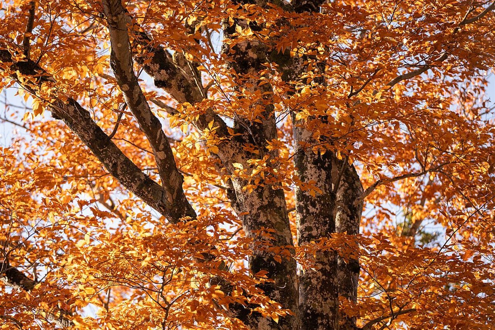
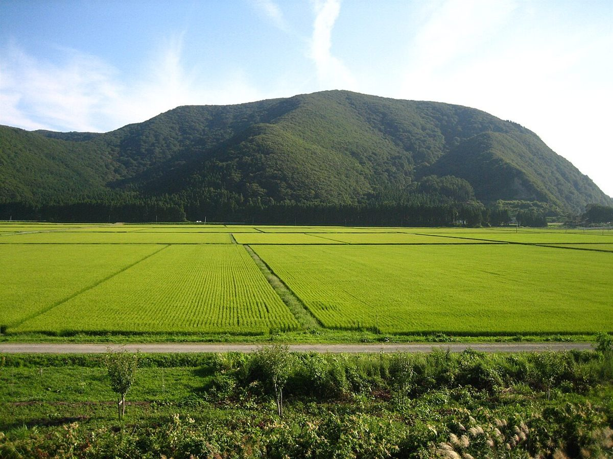
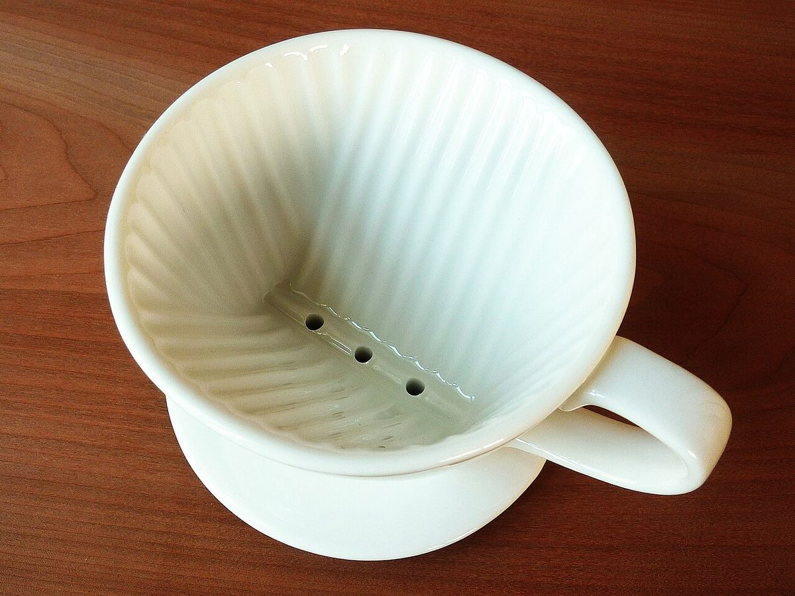

福島県二本松市 木幡(こはた)
山あいで、
ひと息つく場所。
こはたcafé(木幡カフェ)は、福島県二本松市木幡治家にあるカフェです。このページは、お店を知っていただくきっかけとして制作側が作った試作ページです。

写真はイメージ(福島県の山)制作側からの、ひとつの案
コンセプト案(制作側の案)「山あいの一杯、ゆっくり過ごす時間」。住所から、山あいの集落にあるお店だとうかがえます。その土地の空気と、カップ一杯のコーヒーの時間をつなぐイメージで、ページを組み立てました。実際のお店の考え方とは異なる場合があります。




お店のご案内
- 所在地
- 福島県二本松市木幡治家49
- 営業時間
- 準備中(お問い合わせください)
- 定休日
- 準備中(お問い合わせください)
- メニュー・料金
- 準備中(お問い合わせください)
営業時間・定休日・メニューは、お電話またはInstagramでご確認ください。
最新の情報はInstagramで
お店の最新の様子は、公式Instagramでご確認ください。
Instagramを見る